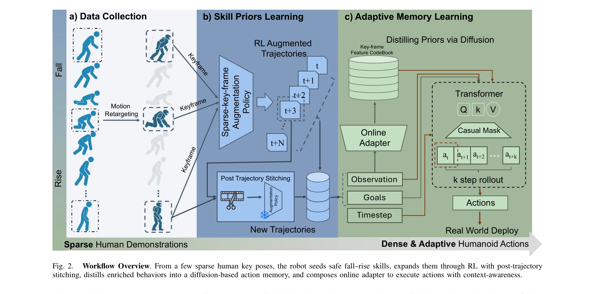

Essence

Fig. 1.
휴머노이드 로봇이 균형을 잃었을 때 안전하게 넘어지고 빠르게 일어날 수 있도록, 스파스한 인간 시연과 reinforcement learning, diffusion 기반 메모리를 결합하여 낙상 예방·충격 완화·회복을 통합하는 단일 정책을 학습한다.
저자: Zhengjie Xu, Ye Li, Kwan-yee Lin, Stella X. Yu | 날짜: 2025-11-10 | DOI: 10.48550/arXiv.2511.07407
Fig. 1.
휴머노이드 로봇이 균형을 잃었을 때 안전하게 넘어지고 빠르게 일어날 수 있도록, 스파스한 인간 시연과 reinforcement learning, diffusion 기반 메모리를 결합하여 낙상 예방·충격 완화·회복을 통합하는 단일 정책을 학습한다.

Fig. 2.
Fig. 2.
총평: 본 논문은 휴머노이드 낙상 완화와 회복을 명시적으로 통합하는 첫 성공적인 통합 정책을 제시하며, 스파스 인간 시연과 RL, diffusion model을 창의적으로 결합하여 안전한 다중 모달 행동을 학습한다. Unitree G1에서의 견고한 sim-to-real 전이와 일관된 성능은 실제 환경에서의 로봇 안전성을 크게 향상시킬 가능성을 보여준다.